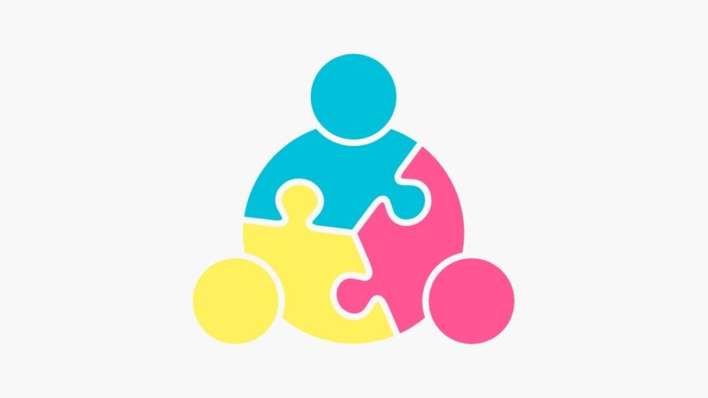

Work Experience
November 2020 - December 2020
WAREHOUSE PICKER/PACKER, WATSONS
I worked as a warehouse picker and packer under Watsons for about 1 and a half months. This was my first
work experience so it really taught me much about the workplace that I previously didn't know. It was a
physically-straining job but very rewarding at the end of the day. I would say this was a great introduction to
the working world.
February 2021
CNY FESTIVE HELPER/PROMOTER, F&N
During the Chinese New Year (CNY) celebration period, I worked as one of the many promoters for CNY goods and promotions under F&N.
I was stationed at the Fairprice outlet @JEM as the only temporary staff working for F&N.
It was difficult working alone for the most part, with some supervisors checking in from time to time.
However, I truly learnt the importance of being professional even when no one is looking.
This experience helped strengthen my sense of duty.
Education
April 2021 - Present
(IN PROGRESS) DIPLOMA IN INFORMATION TECHNOLOGY, SCHOOL OF INFOCOMM TECHNOLOGY, NGEE ANN POLYTECHNIC
This is the place I am currently pursuing my diploma in Information Technology at.
This school will be very different from the general education I received during my secondary and primary school years.
As the curriculum will be more focused and work-oriented, I hope to gain the skills and knowledge I need for my future career during my time here
January 2017 - December 2020
O' LEVELS, FAIRFIELD METHODIST SCHOOL (SECONDARY)
I pursued my O level qualifications here to receive a higher education in the future.
However, it was also a place where is experienced part of my youth and gain insight into my self-development.
I learnt about leadership, teamwork and independence among many others.
This educational institution taught me more than just the syllabus and I am grateful to every classmate, teacher and staff who guided me through this journey.
Core Skills
Technical Skills
| Leadership | |
|---|---|
| Teamwork |  |
| Critical Thinking |  |
| Python Programming |
|---|
| Basic-Intermediate |
| C# Programming |
| Basic |
| HTML & CSS |
| Basic |
| JavaScript |
| Basic |